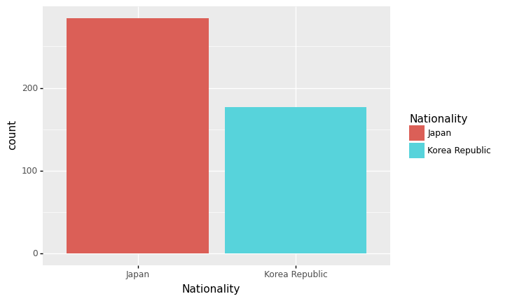

판다스–melt,stack, tidydata, barplot, 해들리위컴의 그레프레이어
강의영상
https://youtube.com/playlist?list=PLQqh36zP38-wY12M2YbVZ4VveB8bj39AW
imports
판다스: melt, stack
melt
- 설명:
- 데이터
| Date | Samsung | Apple | Huawei | Xiaomi | Oppo | Mobicel | Motorola | LG | Others | Realme | Nokia | Lenovo | OnePlus | Sony | Asus | ||
|---|---|---|---|---|---|---|---|---|---|---|---|---|---|---|---|---|---|
| 0 | 2019-10 | 461 | 324 | 136 | 109 | 76 | 81 | 43 | 37 | 135 | 28 | 39 | 14 | 22 | 17 | 20 | 17 |
| 1 | 2019-11 | 461 | 358 | 167 | 141 | 86 | 61 | 29 | 36 | 141 | 27 | 29 | 20 | 23 | 10 | 19 | 27 |
| 2 | 2019-12 | 426 | 383 | 143 | 105 | 53 | 45 | 51 | 48 | 129 | 30 | 20 | 26 | 28 | 18 | 18 | 19 |
| 3 | 2020-01 | 677 | 494 | 212 | 187 | 110 | 79 | 65 | 49 | 158 | 23 | 13 | 19 | 19 | 22 | 27 | 22 |
| 4 | 2020-02 | 593 | 520 | 217 | 195 | 112 | 67 | 62 | 71 | 157 | 25 | 18 | 16 | 24 | 18 | 23 | 20 |
| 5 | 2020-03 | 637 | 537 | 246 | 187 | 92 | 66 | 59 | 67 | 145 | 21 | 16 | 24 | 18 | 31 | 22 | 14 |
| 6 | 2020-04 | 647 | 583 | 222 | 154 | 98 | 59 | 48 | 64 | 113 | 20 | 23 | 25 | 19 | 19 | 23 | 21 |
| 7 | 2020-05 | 629 | 518 | 192 | 176 | 91 | 87 | 50 | 66 | 150 | 43 | 27 | 15 | 18 | 19 | 19 | 13 |
| 8 | 2020-06 | 663 | 552 | 209 | 185 | 93 | 69 | 54 | 60 | 140 | 39 | 16 | 16 | 17 | 29 | 25 | 16 |
| 9 | 2020-07 | 599 | 471 | 214 | 193 | 89 | 78 | 65 | 59 | 130 | 40 | 27 | 25 | 21 | 18 | 18 | 12 |
| 10 | 2020-08 | 615 | 567 | 204 | 182 | 105 | 82 | 62 | 42 | 129 | 47 | 16 | 23 | 21 | 27 | 23 | 20 |
| 11 | 2020-09 | 621 | 481 | 230 | 220 | 102 | 88 | 56 | 49 | 143 | 54 | 14 | 15 | 17 | 15 | 19 | 15 |
| 12 | 2020-10 | 637 | 555 | 232 | 203 | 90 | 52 | 63 | 49 | 140 | 33 | 17 | 20 | 22 | 9 | 22 | 21 |
- 사용예시1: 기본사용
| variable | value | |
|---|---|---|
| 0 | Date | 2019-10 |
| 1 | Date | 2019-11 |
| 2 | Date | 2019-12 |
| 3 | Date | 2020-01 |
| 4 | Date | 2020-02 |
| ... | ... | ... |
| 216 | Asus | 16 |
| 217 | Asus | 12 |
| 218 | Asus | 20 |
| 219 | Asus | 15 |
| 220 | Asus | 21 |
221 rows × 2 columns
- variable: column name들이 들어간다.
- value: column name에 대응하는 값들이 들어간다.
- 사용예시2: id_vars –> tidy data
| Date | variable | value | |
|---|---|---|---|
| 0 | 2019-10 | Samsung | 461 |
| 1 | 2019-11 | Samsung | 461 |
| 2 | 2019-12 | Samsung | 426 |
| 3 | 2020-01 | Samsung | 677 |
| 4 | 2020-02 | Samsung | 593 |
| ... | ... | ... | ... |
| 203 | 2020-06 | Asus | 16 |
| 204 | 2020-07 | Asus | 12 |
| 205 | 2020-08 | Asus | 20 |
| 206 | 2020-09 | Asus | 15 |
| 207 | 2020-10 | Asus | 21 |
208 rows × 3 columns
- 사용예시3:
| variable | value | |
|---|---|---|
| 0 | Samsung | 461 |
| 1 | Samsung | 461 |
| 2 | Samsung | 426 |
| 3 | Samsung | 677 |
| 4 | Samsung | 593 |
| ... | ... | ... |
| 203 | Asus | 16 |
| 204 | Asus | 12 |
| 205 | Asus | 20 |
| 206 | Asus | 15 |
| 207 | Asus | 21 |
208 rows × 2 columns
- 사용예시4: ignore_index=False
| Date | variable | value | |
|---|---|---|---|
| 0 | 2019-10 | Samsung | 461 |
| 1 | 2019-11 | Samsung | 461 |
| 2 | 2019-12 | Samsung | 426 |
| 3 | 2020-01 | Samsung | 677 |
| 4 | 2020-02 | Samsung | 593 |
| ... | ... | ... | ... |
| 203 | 2020-06 | Asus | 16 |
| 204 | 2020-07 | Asus | 12 |
| 205 | 2020-08 | Asus | 20 |
| 206 | 2020-09 | Asus | 15 |
| 207 | 2020-10 | Asus | 21 |
208 rows × 3 columns
stack
- 설명:
df=pd.read_csv('https://raw.githubusercontent.com/PacktPublishing/Pandas-Cookbook/master/data/flights.csv')\
.groupby(["AIRLINE","WEEKDAY"]).agg({"CANCELLED":[np.mean,"count"],"DIVERTED":[np.mean,"count"]})
df| CANCELLED | DIVERTED | ||||
|---|---|---|---|---|---|
| mean | count | mean | count | ||
| AIRLINE | WEEKDAY | ||||
| AA | 1 | 0.032106 | 1277 | 0.004699 | 1277 |
| 2 | 0.007341 | 1226 | 0.001631 | 1226 | |
| 3 | 0.011949 | 1339 | 0.001494 | 1339 | |
| 4 | 0.015004 | 1333 | 0.003751 | 1333 | |
| 5 | 0.014151 | 1272 | 0.000786 | 1272 | |
| ... | ... | ... | ... | ... | ... |
| WN | 3 | 0.014118 | 1275 | 0.001569 | 1275 |
| 4 | 0.007911 | 1264 | 0.003165 | 1264 | |
| 5 | 0.005828 | 1201 | 0.000000 | 1201 | |
| 6 | 0.010132 | 987 | 0.003040 | 987 | |
| 7 | 0.006066 | 1154 | 0.002600 | 1154 | |
98 rows × 4 columns
- 사용예시1
| CANCELLED | DIVERTED | |||
|---|---|---|---|---|
| AIRLINE | WEEKDAY | |||
| AA | 1 | mean | 0.032106 | 0.004699 |
| count | 1277.000000 | 1277.000000 | ||
| 2 | mean | 0.007341 | 0.001631 | |
| count | 1226.000000 | 1226.000000 | ||
| 3 | mean | 0.011949 | 0.001494 | |
| ... | ... | ... | ... | ... |
| WN | 5 | count | 1201.000000 | 1201.000000 |
| 6 | mean | 0.010132 | 0.003040 | |
| count | 987.000000 | 987.000000 | ||
| 7 | mean | 0.006066 | 0.002600 | |
| count | 1154.000000 | 1154.000000 |
196 rows × 2 columns
- 사용예시2
df.stack().stack().reset_index().rename({0:'value'},axis=1)
#df.stack().stack().reset_index().rename(columns={'level_2':'aggtype'})| AIRLINE | WEEKDAY | level_2 | level_3 | value | |
|---|---|---|---|---|---|
| 0 | AA | 1 | mean | CANCELLED | 0.032106 |
| 1 | AA | 1 | mean | DIVERTED | 0.004699 |
| 2 | AA | 1 | count | CANCELLED | 1277.000000 |
| 3 | AA | 1 | count | DIVERTED | 1277.000000 |
| 4 | AA | 2 | mean | CANCELLED | 0.007341 |
| ... | ... | ... | ... | ... | ... |
| 387 | WN | 6 | count | DIVERTED | 987.000000 |
| 388 | WN | 7 | mean | CANCELLED | 0.006066 |
| 389 | WN | 7 | mean | DIVERTED | 0.002600 |
| 390 | WN | 7 | count | CANCELLED | 1154.000000 |
| 391 | WN | 7 | count | DIVERTED | 1154.000000 |
392 rows × 5 columns
- 사용예시3 (unstack)
| CANCELLED | DIVERTED | ||||
|---|---|---|---|---|---|
| mean | count | mean | count | ||
| AIRLINE | WEEKDAY | ||||
| AA | 1 | 0.032106 | 1277.0 | 0.004699 | 1277.0 |
| 2 | 0.007341 | 1226.0 | 0.001631 | 1226.0 | |
| 3 | 0.011949 | 1339.0 | 0.001494 | 1339.0 | |
| 4 | 0.015004 | 1333.0 | 0.003751 | 1333.0 | |
| 5 | 0.014151 | 1272.0 | 0.000786 | 1272.0 | |
| ... | ... | ... | ... | ... | ... |
| WN | 3 | 0.014118 | 1275.0 | 0.001569 | 1275.0 |
| 4 | 0.007911 | 1264.0 | 0.003165 | 1264.0 | |
| 5 | 0.005828 | 1201.0 | 0.000000 | 1201.0 | |
| 6 | 0.010132 | 987.0 | 0.003040 | 987.0 | |
| 7 | 0.006066 | 1154.0 | 0.002600 | 1154.0 | |
98 rows × 4 columns
melt, stack 을 set_index와 reset_index와 함께 사용하면 tidydata를 만들기 용이하다.
tidydata
tidydata의 정의
- 느낌: ggplot으로 그림 그리기 좋은 데이터 + pandas로 query, group by 등을 쓰기 좋은 자료
- 정의: https://r4ds.had.co.nz/tidy-data.html
- Each variable must have its own column.
- Each observation must have its own row.
- Each value must have its own cell.
예시1 (tidy data)
| obs | x | y | shape | color |
|---|---|---|---|---|
| 0 | 0 | 0 | ‘star’ | ‘F’ |
| 1 | 0 | 1 | ‘circ’ | ‘F’ |
| 2 | 1 | 0 | ‘star’ | ‘M’ |
| 3 | 1 | 1 | ‘circ’ | ‘M’ |
예시2 (tidy data x)
| shape=star | shape=circ | |
|---|---|---|
| color=F | (0,0) | (0,1) |
| color=M | (1,0) | (1,1) |
예제1: wide df
- data
| Date | Samsung | Apple | Huawei | Xiaomi | Oppo | Mobicel | Motorola | LG | Others | Realme | Nokia | Lenovo | OnePlus | Sony | Asus | ||
|---|---|---|---|---|---|---|---|---|---|---|---|---|---|---|---|---|---|
| 0 | 2019-10 | 461 | 324 | 136 | 109 | 76 | 81 | 43 | 37 | 135 | 28 | 39 | 14 | 22 | 17 | 20 | 17 |
| 1 | 2019-11 | 461 | 358 | 167 | 141 | 86 | 61 | 29 | 36 | 141 | 27 | 29 | 20 | 23 | 10 | 19 | 27 |
| 2 | 2019-12 | 426 | 383 | 143 | 105 | 53 | 45 | 51 | 48 | 129 | 30 | 20 | 26 | 28 | 18 | 18 | 19 |
| 3 | 2020-01 | 677 | 494 | 212 | 187 | 110 | 79 | 65 | 49 | 158 | 23 | 13 | 19 | 19 | 22 | 27 | 22 |
| 4 | 2020-02 | 593 | 520 | 217 | 195 | 112 | 67 | 62 | 71 | 157 | 25 | 18 | 16 | 24 | 18 | 23 | 20 |
| 5 | 2020-03 | 637 | 537 | 246 | 187 | 92 | 66 | 59 | 67 | 145 | 21 | 16 | 24 | 18 | 31 | 22 | 14 |
| 6 | 2020-04 | 647 | 583 | 222 | 154 | 98 | 59 | 48 | 64 | 113 | 20 | 23 | 25 | 19 | 19 | 23 | 21 |
| 7 | 2020-05 | 629 | 518 | 192 | 176 | 91 | 87 | 50 | 66 | 150 | 43 | 27 | 15 | 18 | 19 | 19 | 13 |
| 8 | 2020-06 | 663 | 552 | 209 | 185 | 93 | 69 | 54 | 60 | 140 | 39 | 16 | 16 | 17 | 29 | 25 | 16 |
| 9 | 2020-07 | 599 | 471 | 214 | 193 | 89 | 78 | 65 | 59 | 130 | 40 | 27 | 25 | 21 | 18 | 18 | 12 |
| 10 | 2020-08 | 615 | 567 | 204 | 182 | 105 | 82 | 62 | 42 | 129 | 47 | 16 | 23 | 21 | 27 | 23 | 20 |
| 11 | 2020-09 | 621 | 481 | 230 | 220 | 102 | 88 | 56 | 49 | 143 | 54 | 14 | 15 | 17 | 15 | 19 | 15 |
| 12 | 2020-10 | 637 | 555 | 232 | 203 | 90 | 52 | 63 | 49 | 140 | 33 | 17 | 20 | 22 | 9 | 22 | 21 |
- tidy data 아님
- 정의에 의한 판단: 하나의 observation이 하나의 행을 차지하고 있지 않음.
- 직관적인 판단: 회사별로 색을 다르게 하여 x:‘Date’, y:’판매량’을 하고 싶다면?
- tidydata로 변환 (melt는 너무 쉬우니까 stack으로 해보자)
| Date | Company | Sales | |
|---|---|---|---|
| 0 | 2019-10 | Samsung | 461 |
| 1 | 2019-10 | Apple | 324 |
| 2 | 2019-10 | Huawei | 136 |
| 3 | 2019-10 | Xiaomi | 109 |
| 4 | 2019-10 | Oppo | 76 |
| ... | ... | ... | ... |
| 203 | 2020-10 | Nokia | 20 |
| 204 | 2020-10 | Lenovo | 22 |
| 205 | 2020-10 | OnePlus | 9 |
| 206 | 2020-10 | Sony | 22 |
| 207 | 2020-10 | Asus | 21 |
208 rows × 3 columns
예제2: multi-indexed data
- 데이터
df=pd.read_csv('https://raw.githubusercontent.com/PacktPublishing/Pandas-Cookbook/master/data/flights.csv')\
.groupby(["AIRLINE","WEEKDAY"]).agg({"CANCELLED":[np.mean,"count"],"DIVERTED":[np.mean,"count"]})
df| CANCELLED | DIVERTED | ||||
|---|---|---|---|---|---|
| mean | count | mean | count | ||
| AIRLINE | WEEKDAY | ||||
| AA | 1 | 0.032106 | 1277 | 0.004699 | 1277 |
| 2 | 0.007341 | 1226 | 0.001631 | 1226 | |
| 3 | 0.011949 | 1339 | 0.001494 | 1339 | |
| 4 | 0.015004 | 1333 | 0.003751 | 1333 | |
| 5 | 0.014151 | 1272 | 0.000786 | 1272 | |
| ... | ... | ... | ... | ... | ... |
| WN | 3 | 0.014118 | 1275 | 0.001569 | 1275 |
| 4 | 0.007911 | 1264 | 0.003165 | 1264 | |
| 5 | 0.005828 | 1201 | 0.000000 | 1201 | |
| 6 | 0.010132 | 987 | 0.003040 | 987 | |
| 7 | 0.006066 | 1154 | 0.002600 | 1154 | |
98 rows × 4 columns
- tidy data 아님
- 정의에 의한 판단: 하나의 셀에 여러 관측치가 있음 (표안의 표 느낌)
- 직관적인 판단: WEEKDAY == 4 and mean(CANCELLED) > 0.001 인 자료를 뽑고 싶다면?
- tidydata로 변환 (stack으로 풀면 너무 쉬우니까 melt로 해보자)
| AIRLINE | WEEKDAY | variable_0 | variable_1 | value | |
|---|---|---|---|---|---|
| 0 | AA | 1 | CANCELLED | mean | 0.032106 |
| 1 | AA | 2 | CANCELLED | mean | 0.007341 |
| 2 | AA | 3 | CANCELLED | mean | 0.011949 |
| 3 | AA | 4 | CANCELLED | mean | 0.015004 |
| 4 | AA | 5 | CANCELLED | mean | 0.014151 |
| ... | ... | ... | ... | ... | ... |
| 387 | WN | 3 | DIVERTED | count | 1275.000000 |
| 388 | WN | 4 | DIVERTED | count | 1264.000000 |
| 389 | WN | 5 | DIVERTED | count | 1201.000000 |
| 390 | WN | 6 | DIVERTED | count | 987.000000 |
| 391 | WN | 7 | DIVERTED | count | 1154.000000 |
392 rows × 5 columns
barplot
df = pd.read_csv('https://raw.githubusercontent.com/guebin/DV2021/master/_notebooks/2021-10-25-FIFA22_official_data.csv')\
.query('Nationality=="Korea Republic" or Nationality=="Japan"')\
[['Nationality','Overall','Age']].reset_index(drop=True)
df| Nationality | Overall | Age | |
|---|---|---|---|
| 0 | Korea Republic | 89 | 28 |
| 1 | Japan | 77 | 28 |
| 2 | Japan | 73 | 28 |
| 3 | Korea Republic | 72 | 31 |
| 4 | Japan | 71 | 28 |
| ... | ... | ... | ... |
| 456 | Japan | 59 | 21 |
| 457 | Korea Republic | 60 | 21 |
| 458 | Japan | 54 | 17 |
| 459 | Korea Republic | 51 | 20 |
| 460 | Korea Republic | 58 | 25 |
461 rows × 3 columns
geom_col
- 예시1: 한국과 일본의 평균능력치 비교
| Nationality | Overall | |
|---|---|---|
| 0 | Japan | 66.478873 |
| 1 | Korea Republic | 65.457627 |
- 예시2: 한국과 일본의 평균능력치 비교 (색상변경)
| Nationality | Overall | |
|---|---|---|
| 0 | Japan | 66.478873 |
| 1 | Korea Republic | 65.457627 |
ggplot(data)+geom_col(aes(x='Nationality',y='Overall',fill='Nationality'))
#ggplot(data)+geom_col(aes(x='Nationality',y='Overall',color='Nationality'))
<ggplot: (8739001430581)>- 예시3: 한국과 일본의 평균연령 비교
| Nationality | Age | |
|---|---|---|
| 0 | Japan | 26.084507 |
| 1 | Korea Republic | 27.158192 |
geom_col + position=‘dodge’
- 예시1: 한국과 일본의 평균연령+평균능력치 비교

geom_col + coord_flip()
- 예시1: 한국과 일본의 평균연령+평균능력치 비교 (90도회전)

geom_col + facet_wrap(var)
- 예시1: 한국과 일본의 평균연령+평균능력치 비교 (면분할)
data=df.groupby('Nationality').agg({'Overall':np.mean,'Age':np.mean})\
.stack().reset_index().rename({0:'value'},axis=1)
data| Nationality | level_1 | value | |
|---|---|---|---|
| 0 | Japan | Overall | 66.478873 |
| 1 | Japan | Age | 26.084507 |
| 2 | Korea Republic | Overall | 65.457627 |
| 3 | Korea Republic | Age | 27.158192 |
ggplot(data)+geom_col(aes(x='Nationality',fill='Nationality',y='value'),position='dodge')\
+facet_wrap('level_1')
<ggplot: (8739001171105)>- 예시2: 한국과 일본의 평균연령+평균능력치 비교 (면분할)
geom_col + facet_grid(‘var_y ~ var_x’)
- 예시1: 한국과 일본의 평균연령+평균능력치+최대능력치 비교 (면분할)
data=df.groupby('Nationality').agg({'Overall':[np.mean,np.max],'Age':np.mean})\
.melt(ignore_index=False).reset_index()
data| Nationality | variable_0 | variable_1 | value | |
|---|---|---|---|---|
| 0 | Japan | Overall | mean | 66.478873 |
| 1 | Korea Republic | Overall | mean | 65.457627 |
| 2 | Japan | Overall | amax | 79.000000 |
| 3 | Korea Republic | Overall | amax | 89.000000 |
| 4 | Japan | Age | mean | 26.084507 |
| 5 | Korea Republic | Age | mean | 27.158192 |

geom_bar vs geom_col
- 예시1: 한국과 일본의 단순 선수 숫자 비교 (with goem_col)
data=df.groupby('Nationality').agg({'Age':'count'}).reset_index().rename({'Age':'count'},axis=1)
data| Nationality | count | |
|---|---|---|
| 0 | Japan | 284 |
| 1 | Korea Republic | 177 |

<ggplot: (8739001309845)>- 예시2: 한국과 일본의 단순 선수 숫자 비교 (with goem_bar)

- 특징1: 원래 데이터프레임 그대로 하는게 아니라 뭔가 변형된 값이 출력 (정확하게는 groupby + count가 변형요소)
- 특징2: y는 당연히 count이므로 y를 명시할 필요가 없음. (잘 생각해보면 명시하고 싶어도 명시할 수 없음, y는 groupby + count 에 의해서 계산된 값이고 df자체에는 존재하지 않음)
- 이렇게 약속된 변형은 stat='count' 옵션 때문에 가능함
- stat=’count’는 그룹바이이후에 count를 하라는 의미

- stat='identity' 로 옵션을 바꾸면 약속된 변환이 수행되지 않음
- stat=’identity’는 아무 변환도 하지말라는 의미
- 에러가난다.
(참고) 사실 아래의 3개의 코드가 모두 같다. <– 수업시간에 설명 X
ggplot(df)+geom_bar(aes(x='Nationality',y='..count..',fill='Nationality'),stat='count')
ggplot(df)+geom_bar(aes(x='Nationality',fill='Nationality'),stat='count') # y='..count..' 생략,
ggplot(df)+geom_bar(aes(x='Nationality',fill='Nationality')) # y='..count..' 생략, stat='count' 생략
<ggplot: (8739004080929)>geom_bar()의 불편한점
- 사실 편하라고 만든것 같은데, 그닥 편하지 않음.
- 편하라고 만든 점1: groupby를 자동으로 해줘서 groupby를 못하는 유저들이 사용하기 편리하게 함 -> 그런데 우리는 groupby 잘함
- 편하라고 만든 점2: groupby이후 count연산을 알아서 해줌 -> 그런데 count연산만 알아서해주고 그 이외의 연산은 잘 지원안됨
- 결론: groupby + count 조합에서만 편리하고 나머지는 편하지 않다.
- 불편한 예시: 나라별 overall의 평균을 geom_bar()로 플랏해보라.
| Nationality | Overall | |
|---|---|---|
| 0 | Japan | 66.478873 |
| 1 | Korea Republic | 65.457627 |

해들리위컴의 그래프레이어
ref: https://byrneslab.net/classes/biol607/readings/wickham_layered-grammar.pdf
- data + aes + geom + position + stat + coord + facet
- data: pandas dataframe
- aes: x, y, color/fill, size, alpha, …
- geom: point, col/bar, line/smooth, …
- position: jitter, dodge, …
- stat: identity, count, …
- coord: coord_flip()
- facet: facet_wrap(), facet_grid()
- 해들리위컴의 주장: ggplot2는 자료가 tidydata형태로 정리되어 있을경우 해들리위컴의 그래프레이어에 따라 시각화하는 최상의 툴이다.
- 내 생각
- 해들리위컴의 그래프레이어는 tabular data에 한정하여 맞는 개념임 (그런데 요즘은 안 그런 데이터도 있어)
- tabular data라고 할지라도 ggplot2의 보다 좀 더 좋은 시각화 툴이 개발되었다고 생각 (plotly 등)
HW
df = pd.read_csv('https://raw.githubusercontent.com/guebin/DV2022/master/posts/HRDataset_v14.csv')
df| Employee_Name | EmpID | MarriedID | MaritalStatusID | GenderID | EmpStatusID | DeptID | PerfScoreID | FromDiversityJobFairID | Salary | ... | ManagerName | ManagerID | RecruitmentSource | PerformanceScore | EngagementSurvey | EmpSatisfaction | SpecialProjectsCount | LastPerformanceReview_Date | DaysLateLast30 | Absences | |
|---|---|---|---|---|---|---|---|---|---|---|---|---|---|---|---|---|---|---|---|---|---|
| 0 | Adinolfi, Wilson K | 10026 | 0 | 0 | 1 | 1 | 5 | 4 | 0 | 62506 | ... | Michael Albert | 22.0 | Exceeds | 4.60 | 5 | 0 | 1/17/2019 | 0 | 1 | |
| 1 | Ait Sidi, Karthikeyan | 10084 | 1 | 1 | 1 | 5 | 3 | 3 | 0 | 104437 | ... | Simon Roup | 4.0 | Indeed | Fully Meets | 4.96 | 3 | 6 | 2/24/2016 | 0 | 17 |
| 2 | Akinkuolie, Sarah | 10196 | 1 | 1 | 0 | 5 | 5 | 3 | 0 | 64955 | ... | Kissy Sullivan | 20.0 | Fully Meets | 3.02 | 3 | 0 | 5/15/2012 | 0 | 3 | |
| 3 | Alagbe,Trina | 10088 | 1 | 1 | 0 | 1 | 5 | 3 | 0 | 64991 | ... | Elijiah Gray | 16.0 | Indeed | Fully Meets | 4.84 | 5 | 0 | 1/3/2019 | 0 | 15 |
| 4 | Anderson, Carol | 10069 | 0 | 2 | 0 | 5 | 5 | 3 | 0 | 50825 | ... | Webster Butler | 39.0 | Google Search | Fully Meets | 5.00 | 4 | 0 | 2/1/2016 | 0 | 2 |
| ... | ... | ... | ... | ... | ... | ... | ... | ... | ... | ... | ... | ... | ... | ... | ... | ... | ... | ... | ... | ... | ... |
| 306 | Woodson, Jason | 10135 | 0 | 0 | 1 | 1 | 5 | 3 | 0 | 65893 | ... | Kissy Sullivan | 20.0 | Fully Meets | 4.07 | 4 | 0 | 2/28/2019 | 0 | 13 | |
| 307 | Ybarra, Catherine | 10301 | 0 | 0 | 0 | 5 | 5 | 1 | 0 | 48513 | ... | Brannon Miller | 12.0 | Google Search | PIP | 3.20 | 2 | 0 | 9/2/2015 | 5 | 4 |
| 308 | Zamora, Jennifer | 10010 | 0 | 0 | 0 | 1 | 3 | 4 | 0 | 220450 | ... | Janet King | 2.0 | Employee Referral | Exceeds | 4.60 | 5 | 6 | 2/21/2019 | 0 | 16 |
| 309 | Zhou, Julia | 10043 | 0 | 0 | 0 | 1 | 3 | 3 | 0 | 89292 | ... | Simon Roup | 4.0 | Employee Referral | Fully Meets | 5.00 | 3 | 5 | 2/1/2019 | 0 | 11 |
| 310 | Zima, Colleen | 10271 | 0 | 4 | 0 | 1 | 5 | 3 | 0 | 45046 | ... | David Stanley | 14.0 | Fully Meets | 4.50 | 5 | 0 | 1/30/2019 | 0 | 2 |
311 rows × 36 columns
- 성별(Sex) 평균급여(Salary)를 구하고 아래의 지침에 따라 시각화 하라.
- barplot으로 시각화
- 성별을 색깔과 x축으로 구분
- 평균급여는 y축으로 구분

- 성별(Sex)/인종별(RaceDesc) 평균급여(Salary)를 구하고 아래의 지침에 따라 시각화 하라.
- barplot으로 시각화
- 인종은 면분할로 구분
- 성별은 x축과 색깔로 구분
- 평균급여는 y축으로 구분